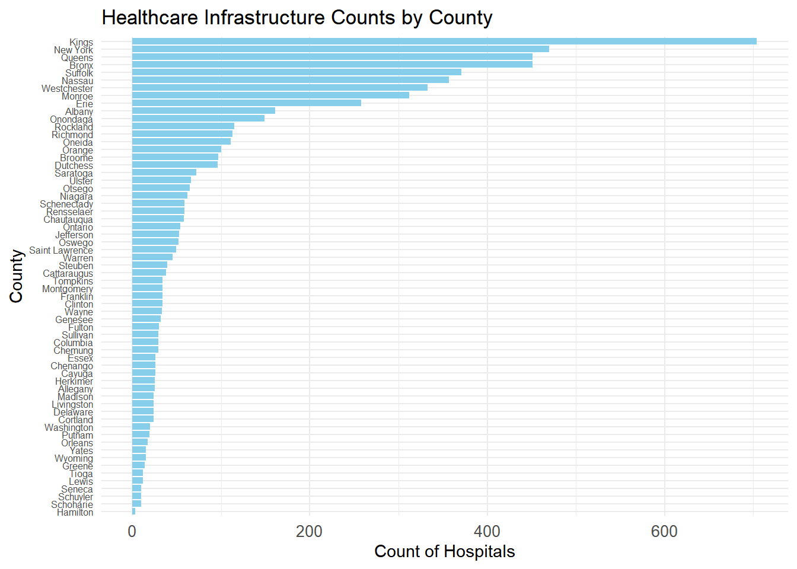
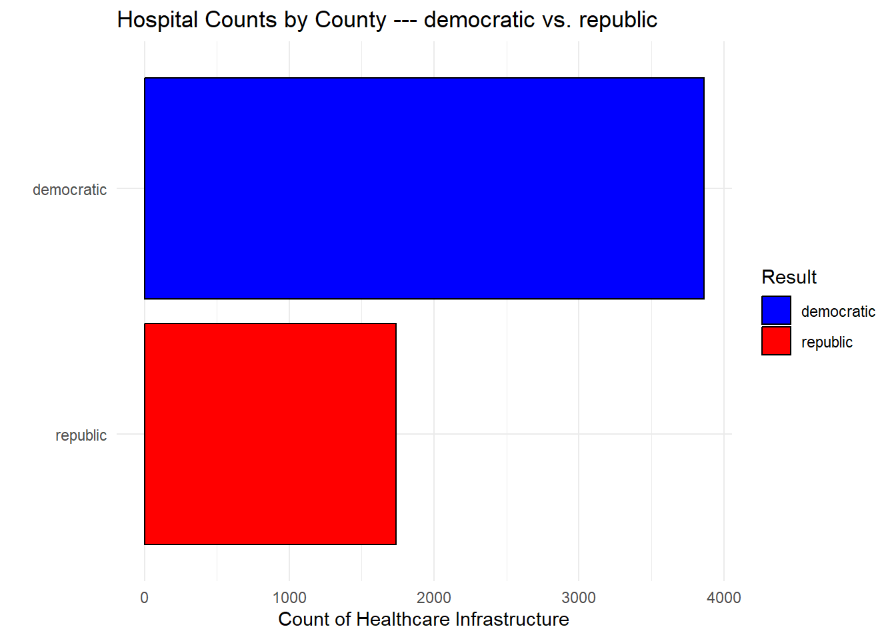
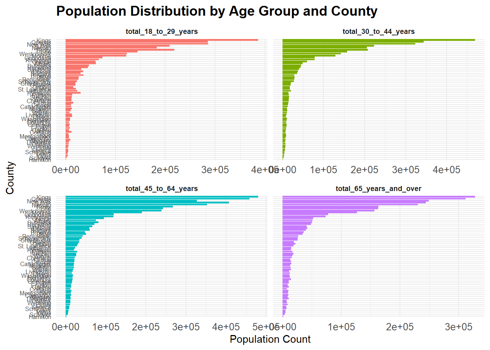
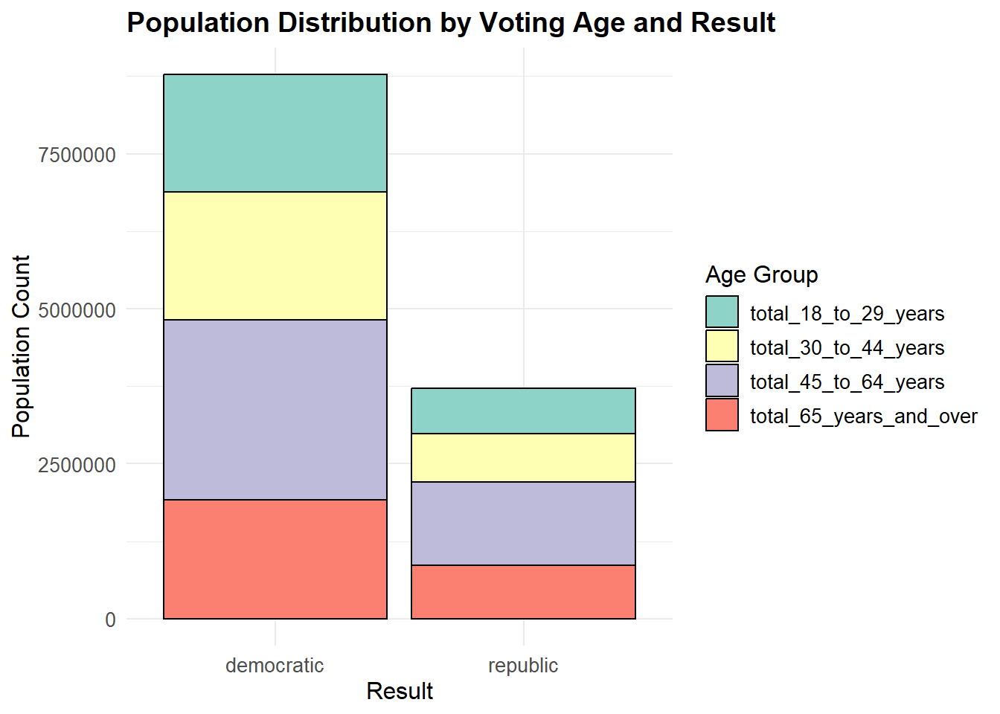

covid_19 = read.csv("data/New_York_State_Statewide_COVID-19_Testing__Archived__20241205.csv")
covid_19_NY = filter(covid_19,
Test.Date == "11/03/2020" &
Geography == "COUNTY")
covid_19_fatality = read.csv("data/New_York_State_Statewide_COVID-19_Fatalities_by_County_20241205.csv")
covid_19_fatality_NY = filter(covid_19_fatality,
Report.Date == "11/03/2020")
election_result = read.csv("data/election_result_NY_2020.csv")
election_covid = left_join(covid_19_NY, election_result,by = "County")
election_covid = left_join(election_covid, covid_19_fatality_NY, by = "County")#Load dataset
poverty_level <- read.csv("data/2000_socioeconomic_indicator_poverty.csv") %>%
janitor::clean_names()
#Extract the first column and use it as a dataframe
first_column <- data.frame(poverty_level$label_grouping)%>%
filter(str_ends(poverty_level$label_grouping, "New York"))
#keeping all estimate as a seprate dataframe
df <- poverty_level%>%
filter(str_ends(label_grouping,"Estimate"))
#Binding those two into one dataframe
poverty_county_level <- cbind(first_column, df) %>%
mutate(
total = as.numeric(gsub(",", "", total)),
total_income_in_the_past_12_months_at_or_above_the_poverty_level = as.numeric(gsub(",", "", total_income_in_the_past_12_months_at_or_above_the_poverty_level)),
total_income_in_the_past_12_months_below_poverty_level = as.numeric(gsub(",", "", total_income_in_the_past_12_months_below_poverty_level)),
above_poverty_percentage = (total_income_in_the_past_12_months_at_or_above_the_poverty_level / total) * 100,
below_poverty_percentage = (total_income_in_the_past_12_months_below_poverty_level / total) * 100
) %>%
rename(
county = poverty_level.label_grouping
) %>%
mutate(
county = sub(" County, New York$", "", county)
) %>%
select(-label_grouping)%>%
slice(-1) #load the dataset
voting_age <- read_csv("data/2000_voting_demographic_age.csv")%>%
janitor::clean_names()
#Extract the first column and use it as a dataframe
first_column_age <- data.frame(voting_age$label_grouping)%>%
filter(str_ends(voting_age$label_grouping, "New York"))%>%
rename(
county = voting_age.label_grouping
) %>%
mutate(
county = sub(" County, New York$", "", county))
#keeping all estimate as a seprate dataframe
df_age <- voting_age%>%
filter(str_ends(label_grouping,"Estimate"))%>%
mutate(
total_18_to_29_years = as.numeric(gsub(",", "",total_18_to_29_years)),
total_30_to_44_years = as.numeric(gsub(",", "",total_30_to_44_years)),
total_45_to_64_years = as.numeric(gsub(",", "",total_45_to_64_years)),
total_65_years_and_over = as.numeric(gsub(",", "",total_65_years_and_over)),
total = as.numeric(gsub(",", "",total)))%>%
mutate(
below_30_percent = (total_18_to_29_years)/total*100,
above_30_percent = (total_30_to_44_years+total_45_to_64_years+total_65_years_and_over)/total*100,
above_65_percent = total_65_years_and_over/total*100)
#Binding those two into one dataframe
voting_age_county_level <- cbind(first_column_age, df_age)%>%
slice(-1)#load the dataset
health_facility_count <- read_excel("data/2020_health_facility_count.xlsx")
#create barchart of hospital distribution
ggplot(health_facility_count, aes(x = reorder(county, count), y = count)) +
geom_bar(stat = "identity", fill = "skyblue") +
coord_flip() +
theme_minimal() +
labs(title = "Healthcare Infrastructure Counts by County",
x = "County",
y = "Count of Hospitals") +
theme(axis.text.y = element_text(size = 6),
axis.text.x = element_text(size = 10))
#Getting election results in binary version
election_result <- election_result%>%
janitor::clean_names()%>%
mutate(
result = if_else(democratic_percent > republician_percent, "democratic", "republic"))%>%
select(county,result)
#merge tables to get hospital count classified by rep vs. demo
election_result_hospital_count <- merge(election_result, health_facility_count, by = "county", all.x = TRUE)
#create barchart for hospital count based on election results
count_result <- aggregate(count ~ result, data = election_result_hospital_count, FUN = sum, na.rm = TRUE)
ggplot(count_result, aes(x = reorder(result, count), y = count, fill = result)) +
geom_bar(stat = "identity", color = "black") +
scale_fill_manual(values = c("democratic" = "blue", "republic" = "red")) +
coord_flip() +
theme_minimal() +
labs(title = "Hospital Counts by County --- democratic vs. republic",
x = "",
y = "Count of Healthcare Infrastructure",
fill = "Result")
#load the dataset
voting_age_county_level_clean <- read_excel("data/voting_age_county_level_clean_v2.0.xlsx")%>%
select(county,total_18_to_29_years,total_30_to_44_years,total_45_to_64_years,total_65_years_and_over)
#create long dataframe
long_data <- voting_age_county_level_clean %>%
pivot_longer(
cols = starts_with("total_"),
names_to = "age_group",
values_to = "population")
#create barchart
ggplot(long_data, aes(x = reorder(county, population), y = population, fill = age_group)) +
geom_bar(stat = "identity", show.legend = FALSE) +
coord_flip() +
facet_wrap(~age_group, scales = "free_x") +
theme_minimal() +
labs(
title = "Population Distribution by Age Group and County",
x = "County",
y = "Population Count"
) +
theme(
strip.text = element_text(size = 7, face = "bold"),
axis.text.y = element_text(size = 6),
axis.text.x = element_text(size = 10),
plot.title = element_text(size = 14, face = "bold")
)
#merge tables to get age_distribution classified by rep vs. demo
election_result_voting_age_distribution <- merge(election_result, voting_age_county_level_clean, by = "county", all.x = TRUE)
#merge dataset for age distribution for democratic vs. republican
voting_age_result_1 <- aggregate(total_18_to_29_years ~ result, data = election_result_voting_age_distribution, FUN = sum, na.rm = TRUE)
voting_age_result_2 <- aggregate(total_30_to_44_years ~ result, data = election_result_voting_age_distribution, FUN = sum, na.rm = TRUE)
voting_age_result_3 <- aggregate(total_45_to_64_years ~ result, data = election_result_voting_age_distribution, FUN = sum, na.rm = TRUE)
voting_age_result_4 <- aggregate(total_65_years_and_over ~ result, data = election_result_voting_age_distribution, FUN = sum, na.rm = TRUE)
voting_age_result_df <- Reduce(function(x, y) merge(x, y, by = "result", all.x = TRUE),
list(voting_age_result_1, voting_age_result_2, voting_age_result_3, voting_age_result_4))
#create barchart for voting age distribution based on election results
voting_age_long <- pivot_longer(
voting_age_result_df,
cols = starts_with("total_"),
names_to = "age_group",
values_to = "population"
)
# Create the bar chart
ggplot(voting_age_long, aes(x = result, y = population, fill = age_group)) +
geom_bar(stat = "identity", position = "stack", color = "black") +
theme_minimal() +
labs(
title = "Population Distribution by Voting Age and Result",
x = "Result",
y = "Population Count",
fill = "Age Group"
) +
scale_fill_brewer(palette = "Set3") +
theme(
axis.text = element_text(size = 10),
axis.title = element_text(size = 12),
plot.title = element_text(size = 14, face = "bold"),
legend.title = element_text(size = 12),
legend.text = element_text(size = 10)
)